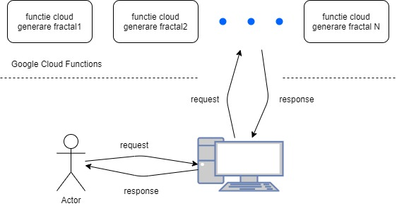

Tema aplicatiei: Se doreşte dezvoltarea unui cadru-suport (framework, platformă) pentru a vizualiza eficient diverse tipuri de fractali -- minimal, sisteme generative precum fractalii Lindenmayer (L-systems) implicând un număr foarte mare de reguli şi/sau iteraţii. Modalitatea de redare (2D şi 3D) va recurge la utilizarea uneia sau mai multor soluţii aliniate problematicilor cloud computing -- a se explora resursele oferite de Awesome Cloud Native.
Colocvial, un fractal este o figură geometrică fragmentată sau frântă care poate fi divizată în părți, astfel încât fiecare dintre acestea să fie (cel puțin aproximativ) o copie miniaturală a întregului.

Idee principala a dezvoltarii: Aplicatia va fi o aplicatie de tipul platforma, ce se va incadra in tipologia Server-Client (Tipologia client-server reprezinta un device centralizat de tip server la care mai multi clienti "slabi" sunt conectati. Clientii se bazeaza pe server pentru resurse precum fisiere sau chiar putere de procesare.).
Odata ajuns pe pagina de pornire a aplicatiei clientul poate naviga printre fractalii pusi la dispozitie.
Arhitectura:Utilizatorul se intra pe platforma. Este dus la pagina de index.
Aici poate naviga printre fractalii pusi la dispozitie setand diferite reguli.
De fiecaredate cand un fractal este generat se face un fetch la o functie de pe Google Cloud Functions, care genereaza un obiect din clasa canvas. Obiectul este trimis la server iar serverul construieste obiectul (apeland functia stroke() ).

Flow-ul de date:
- O persona acceseaza platforma
- By default este afisat fractalul "Tree" cu valorile default de generare
-
Daca utilizatorul modifica regulile de generare sau da click pe alt fractal pus la dispozitie:
- Se valideaza valorile de la reguli
- Se face un request la Google Cloud Function, apelandu-se functia specifica fractalului selectat
- Google Cloud Functions genereaza o instanta ca clasei Canvas si o returneaza server-ului
- Serverul primeste instanta de Canvas si o construieste cu functia stroke();
Generarea fractalilor:
In momentul de fata sunt pusi la dispozitia utilizatorului 3 fractali:
Tree Generarea fractalului arborescent.
Parametri
- Length: lungimea de pornire a "bratelor"
- Depth: numarul maxim de nivele pe care sa urce arborele
- Max Ramification: numarul maxim de ramificatii
- Angle(needitabil): unghiul la care se formeaza "bratele"
- subBranches(needitabil): un array (de tuple x, y - coordonate) cu toate bratele ce urmeaza sa fie construite (inital e doar "radacina")
Algoritm de generare
- cat timp nu ajungem pe ultimul nivel (nivel_actual != depth)
- pentru fiecare element din subBranches desenam bratul indicat
- ajustam unghiurile(care se maresc progresiv) si lungimea crengilor (care scade progresiv)
- generam un nou array de subBranches care vor fi legate de ramurile de pe nivelul actual
- incrementam nivel_actual
Triangle ( Sierpinski Triangle ) Generarea fractalului Triunghiul lui Sierpinski
Parametri
- Iteratii: numarul de iteratii
- TriangleArray(needitabil): un array ce contine 3-uple de coordonate (x, y, z - reprezentand coordonatele colturile unui triunghi echilateral)
Algoritm de generare
- Algoritmul ruleaza cat timp iteratiile sunt > 0, folosim "iteration--" la fiecare final de iteratie
- Pentru fiecare element din TriangleArray se repeta urmatoarele actiuni. Initial TriangleArray contine doar un 3-uplu ce reprezinta coordonatele de pornire ale algoritmului
- Se construieste triunghiul de baza (un simplu triunghi echilateral)
- Se marcheaza mijloacele laturilor triunghiului ( ( Ax + Bx ) / 2 , ( Ay + By ) / 2 )
- Se traseaza liniile intre fiecare 2 mijloace
- Se adauga in lista TriangleArray un 3-uplu de coordonate format din coordonatele varfului unui unghi si coordonatele celor mai apropiate 2 mijloace de acesta
Line ( Koch Curve ) Generarea fractalului Curba Koch
Parametri
- Iteratii: numarul de iteratii
- LinesArray(needitabil): un array ce contine 2-uple de coordonate ce reprezinta punctele de pe curba
Algoritmul de generare
- Algoritmul ruleaza cat timp iteratiile sunt > 0, folosim "iteration--" la fiecare final de iteratie
- Pentru fiecare element din LinesArray se repeta urmatoarele actiuni
- Se calculeaza punctele ce se afla la p1/3 si p2/3 din distanta dintre cele 2 puncte din 2-uplu
- Acestea vor reprezenta baza triunghiului echilateral. Calculam distanta dintre cele 2 puncte
- d(p1/3, p2/3) = baza triunghiului echilateral. O putem folosi pentru a afla inaltimea triunghiului
- Avnad inaltimea triunghiului putem determina coordonatele varfului triunghiului
- Trasam noile linii
- Pentru fiecare 2 puncte consecutive se adauga un 2-uplu in LinesArray
HTML5(HyperText Markup Language), o tehnologie nucleu pentru internet, propusa intial pentru browser-ul Opera, este un limbaj pentru structurarea si prezentarea continutului WWW(World Wide Web)
CSS(Cascading Style Sheets), este un standard pentru formatarea elementelor unui document HTML.
Node.js este un runtime environment pentru javascript care executa cod javascript inafara browser-ului, dand astfel oportunitatea programatorilor sa foloseasca javascript pentru partea de back-end a aplicatiilor.
Google Cloud Functions este un serviciu pus la dispozitie de cei de la Google, pe care il voi folosi pentru puterea de procesare (procesarea fractalilor).